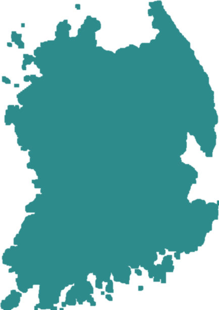
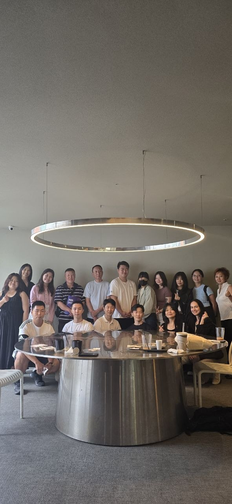

АКРК — официальная организация русскоязычных корейцев из стран СНГ, живущих в Корее. Мы представляем интересы сообщества перед государством, помогаем адаптироваться и сохраняем идентичность корё-сарам.






Подробнее о структуре, стратегии, бюджете и жизни АКРК Юг — из презентации информационной сессии.
 🏛 21.02.2026 · Ансан
🏛 21.02.2026 · Ансан
Команда Пусана приняла участие в V отчётно-выборном собрании АКРК в Ансане.
🚀 Кимхэ
 🚀 Кимхэ
🚀 Кимхэ
 🏓 28.02.2026
🏓 Участники
📚 Групповое фото
📚 Слушатели
🏓 28.02.2026
🏓 Участники
📚 Групповое фото
📚 Слушатели
 🏛 Пусанский музей
🌍 Команда
🏛 Пусанский музей
🌍 Команда
 🌍 Баннер
🌍 Баннер
Бесплатная возможность попрактиковать разговорный корейский — каждую среду, в комфортном темпе

Подарите самые ценные 10 минут в мире. Всего 10 минут — столько нужно, чтобы сдать кровь, — и кто-то сможет продолжать свою драгоценную жизнь.
Планируем сдать кровь командой от АКРК Пусан. Вместе проще: один организует маршрут до центра, остальные поддерживают друг друга на месте.
Хотите присоединиться? Напишите в Telegram @akrk_south — расскажем, как попасть в донорскую команду.